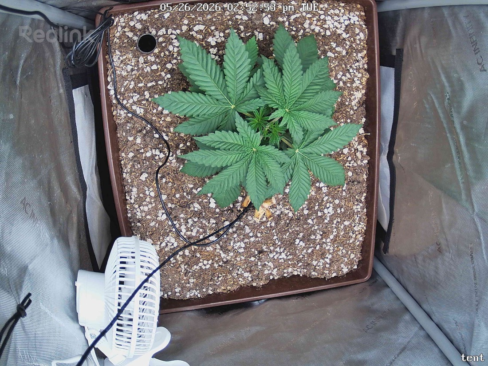

← All reports
May 26, 2026
Tue May 26, 2026 — 2:52 PM

Prognosis
Daily prognosis — Papaya Crush, day ~28 from germ
- Topping response: clean recovery from the 5/23 top — no wilting or shock, and the two upper-most node sites are already breaking out as the new dominant tops. Canopy went from single-leader to a flatter, wider two-cola structure in 3 days.
- Lateral growth: noticeable bulk-up of side branches at nodes 2–3; fan leaves are larger and more spread, posture is open and reaching slightly outward (healthy phototropism, not praying/tacoing).
- Color & leaf health: uniform medium-dark green across the canopy, edges flat, no interveinal chlorosis, no tip burn, no spotting. Serration looks crisp.
- Stress signs: none visible. No clawing, no taco, no bleaching under 400 PPFD. The brown nub center-frame is just the topped stem dieback — expected and benign.
- Soil/medium: surface looks appropriately dry on top with perlite still bright — consistent with day 3 since last water on a 4–5 day cadence. No crusting, no fungus gnats visible, no mold.
- Phase check: ~4 weeks from germ, ~3 weeks in tent, freshly topped and bushing out — right on schedule for early/mid veg. Internode spacing is tight (good — sign light level is dialed), and you're set up well for a 4-main-cola structure if you want to keep training.
- Light: plant is clearly comfortable at 400 PPFD; no need to push yet — let the side branches catch up to the new apex height first.
Next actions:
- Water due in ~1–2 days based on cadence; lift the pot to confirm before pouring.
- Optional: once the two new tops are ~2–3" tall, consider light LST to pull them outward and open the center for the lower nodes.
- Otherwise no action needed.
Overall: Textbook post-top recovery — healthy, balanced, and tracking right where it should be for week 4.